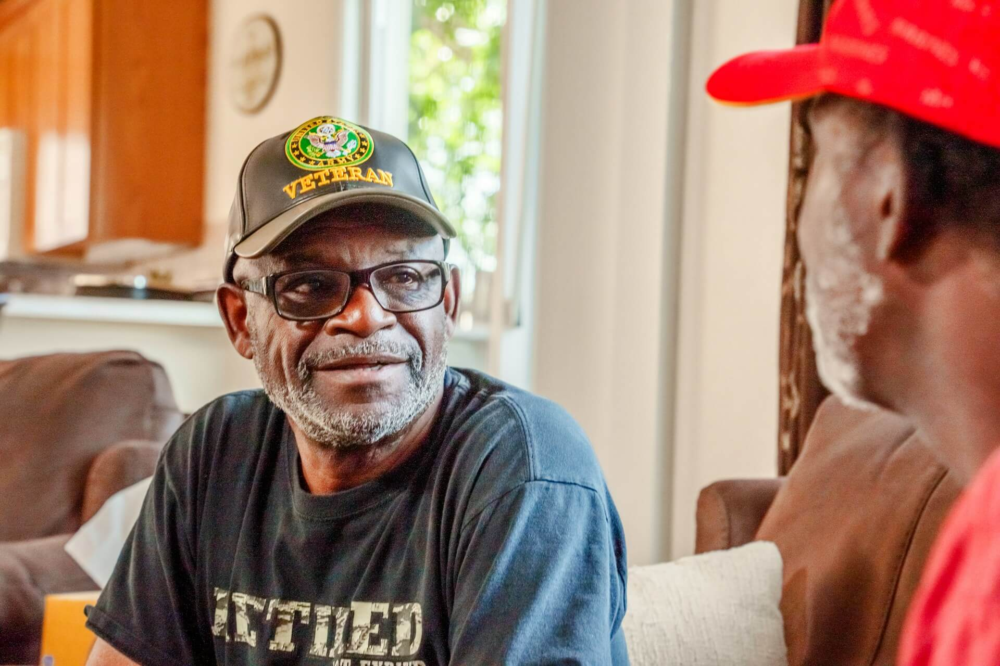
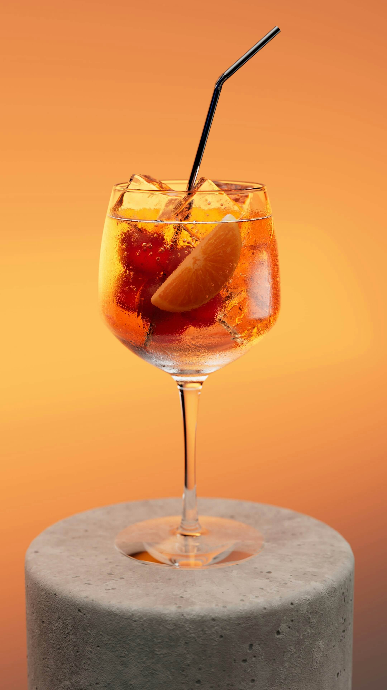
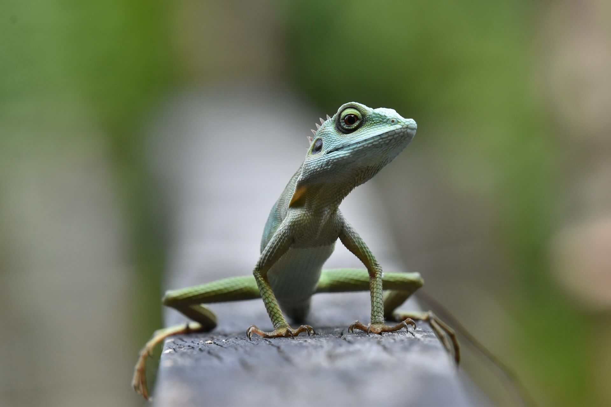

-
Фритрек и нулевой спринт: Подготовка к работе
интерес
Это было самое начало пути. На этом этапе важно было проникнуться основами и настроиться на учёбу. И, возможно, подумать, как новые знания могут повлиять на ваше будущее.
Всё прошло довольно быстро и понятно. Было жутко интересноначать, т.к. подруга расхваливала то как тут здорово учиться.
-
1 спринт: Я — чистый лист
хммм На первых этапах мы работали со страхами и сомнениями, которые часто испытывают новички. Один из них — страх перед чистым листом. Это, конечно же, намного сложнее, чем боязнь куска бумаги. Часто за этим ощущением скрываются более глубокие вопросы: с чего начать? а вдруг будет слишком сложно? что, если я не справлюсь?
Темы все знакомые, но возникли проблемы с самими мини-тренажёрами, те что в тексте. Не всегда очевидно было что требовалось и только по ошибкам становится понятно что же требуется в данном тренажёре написать. В минуты непонимания всегда выручала тех поддержка. Спасибо им за это
-
1 спринт: А если не получится?
отдохнём Первый проект — позади! Но это всё ещё самое начало пути. Радость могла быстро померкнуть и смениться ожиданием провала. Или вы, наоборот, могли вдохновиться успехами и поверить в себя.
Первый проект, было очень интересно посмотреть и попробовать работать с кодревью. Но всё прошло быстро и хорошо, можно и отдохнуть
-
2 спринт: Погоня за идеалом
взахлёбНа этом этапе вы уже достаточно разбирались в основах вёрстки, чтобы понять, как много ещё впереди. Вы могли попытаться погнаться за идеалом и понять, что он недостижим. А, может, вы вовсе и не подвержены перфекционизму и вместо того, чтобы сделать идеально, старались просто сделать.
Второй спринт, здорово, что перед ним есть время отключиться. Снова с упоением залетаем в учёбу
-
2 спринт: О тех, кто рядом
каникулыыыыВсё это время вы были не одиноки (хотя, возможно, иногда и чувствовали, что одни против целого мира). Вас окружали одногруппники, команда сопровождения и просто близкие люди, которым можно пожаловаться, если очередной макет просто так не поддавался. Осваивать что-то новое легче, когда рядом есть единомышленники, не правда ли?
Теория прошла быстро, подчерпнула новенького, второй проект - достаточно интересный, а как же не посмотреть в окно??
-
3 спринт: Обходные стратегии
...На этом курсе вы постоянно решали разные задачи. В какой-то момент вам могло показаться, что решения просто иссякли. Значит, пришло время посмотреть на задачу под другим углом.
Отдохнули, с новыми силами в бой! но тут нас обрадовали что теперь по тренажёрам из теории нам не будут помогать люди(техподдрежка отправляет на наставника, наставник говорит что это не его зона ответственности), приплыли... Я конечно все понимаю, автоматизация, но прежде чем это делать сделайте описание ошибок в тренажёрах более понятными, и описание требуемых действий тоже, нарастает негодование... Благо есть однокурсники с которыми мы справились вместе. Спасибо им за это.
-
3 спринт: Когда опускаются руки
адаптируемся Во время учёбы часто возникает чувство, когда не знаешь, за что хвататься. Вроде и проектную пора сдавать, и задачи хочется порешать, и в теории получше разобраться, и жизнь не забыть пожить. В такие моменты очень нужна концентрация. Вспомните, откуда вы её черпали. P.S небольшое пожелание, пройдитесь по своим макетам и прорисуйте все состояния которые должны присутствовать в работе.
Настало время 3-ей проектной работы, здорово, адаптив, прменили новые подходы, а не как обычно всё хаотично, что-то здесь, что-то там
-
«Сейчас я здесь»
new stepСейчас вы уже очень много знаете о вёрстке. Но это только начало. Во-первых, впереди ещё много материала про «красотищу». Во-вторых, с окончанием курса учёба не заканчивается. Вёрстка — это целый мир. И этот мир постоянно меняется. Познать его полностью не получится, но это тот случай, когда важен сам процесс познания. Ведь часто путь — и есть результат.
Пройдя этот путь, есть небольшое пожелание для улучшения подумайте над тем как можно изменить мини-тренажёры внутри теории, они совсем не удобные, либо почти не видишь изменения, либо, открыв в новой вкладке нужно переключаться на теорию....